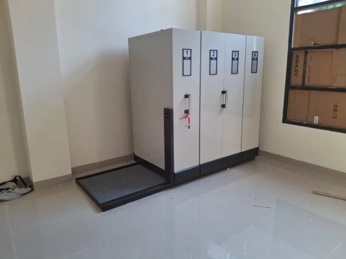
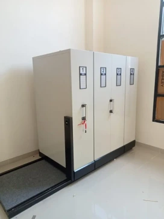
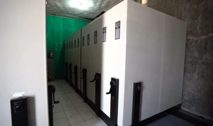
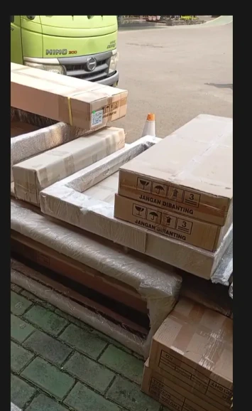
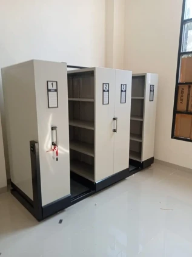
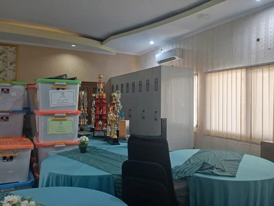
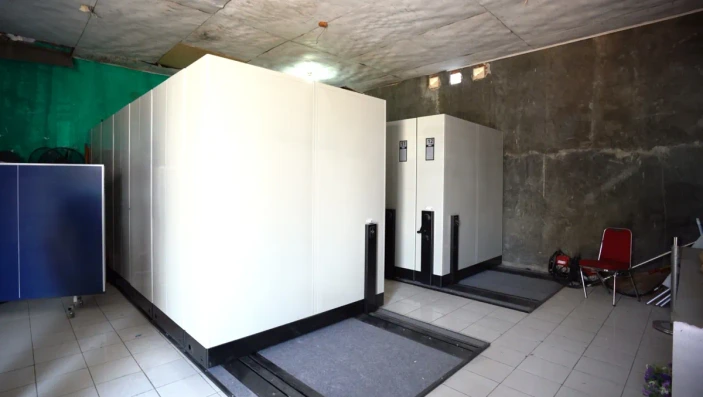
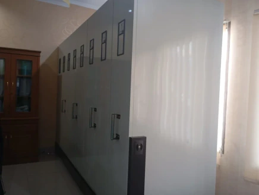
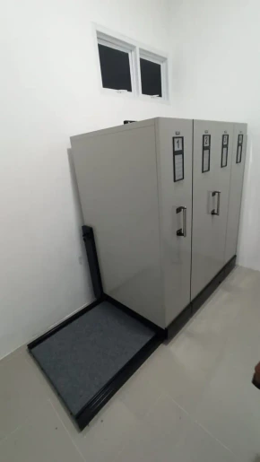
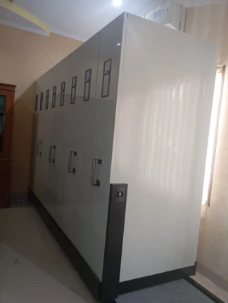

Portofolio Proyek Kami
Foto pemasangan mobile file Zeco di kantor, perusahaan, dan sekolah.

PerkantoranInstalasi Mobile File Manual di Ruang Arsip KantorEmpat unit berdiri rapat di atas rel dan alas lantai. Lorong hanya dibuka saat dokumen dibutuhkan, sehingga ruangan tetap lega.
PerkantoranInstalasi Mobile File di Kantor, Lengkap dengan Alas LantaiNomor dan label di tiap unit membantu petugas menemukan dokumen dengan cepat. Alas lantai berkarpet menjaga area rel tetap rapi.
Perusahaan dan IndustriInstalasi Mobile File Mekanik di Gudang Arsip PerusahaanRoda putar menggeser unit dengan tenaga ringan, jadi arsip dalam jumlah besar tetap mudah dijangkau. Ruang sempit terpakai penuh.
PengirimanPengiriman Unit Mobile File ke Lokasi ProyekRel dan unit kami bungkus dengan plastik dan dus berlapis, supaya aman selama perjalanan sampai ke lokasi Anda.
PerkantoranUji Geser Mobile File Setelah Instalasi di KantorUnit digeser hingga satu lorong terbuka dan rak di dalamnya terlihat. Rak masih kosong, siap diisi map dan boks arsip.
SekolahInstalasi Mobile File di Ruang Kantor SekolahUnit mobile file terpasang di sisi ruangan, bersebelahan dengan meja rapat dan deretan piala sekolah.
Perusahaan dan IndustriDua Blok Mobile File Mekanik di Ruang Arsip PerusahaanDua blok unit berdiri di satu ruangan, masing-masing dengan rel dan alas lantai sendiri.
SekolahMobile File di Ruang Arsip Sekolah, Tampak SampingUnit berjajar memanjang di sisi dinding. Tiap pintu punya nomor dan label, jadi dokumen mudah dicari.
PerkantoranMobile File Terpasang di Ruang Arsip KantorUnit mobile file berdiri di atas rel dengan alas lantai berkarpet, di ruangan yang bersih dan lega.
SekolahDeretan Mobile File di Sepanjang Dinding Ruang Arsip SekolahPintu bernomor memanfaatkan seluruh sisi dinding, jadi arsip yang tersimpan banyak tanpa makan banyak lantai.Siap merapikan arsip dan menghemat ruangan Anda?
Konsultasikan kebutuhan Anda. Kami bantu memilih model Zeco yang paling sesuai.